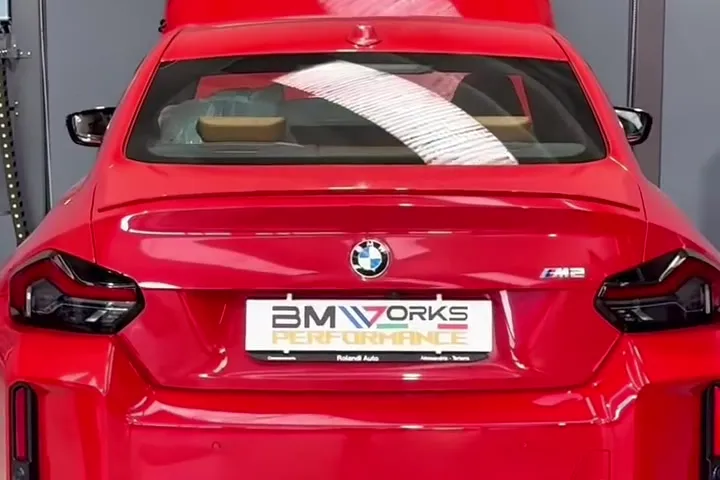
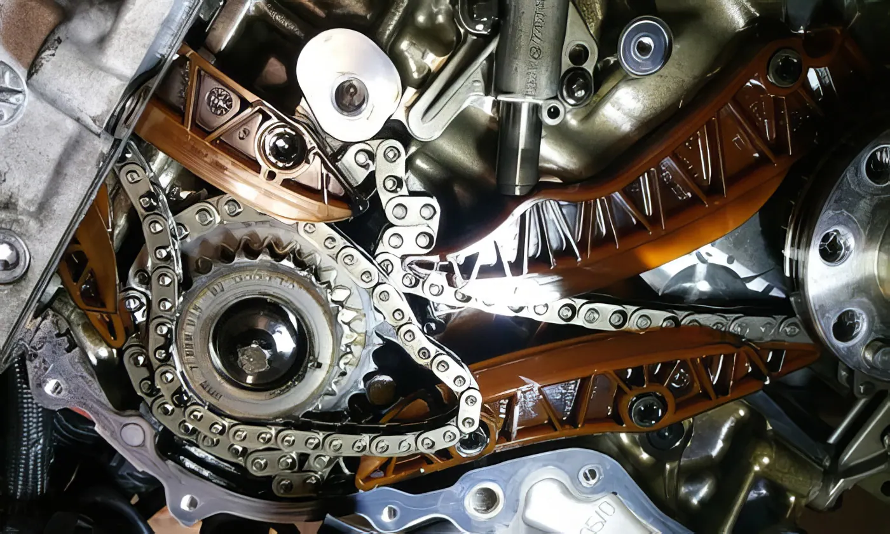
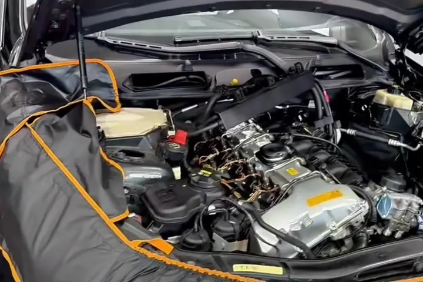
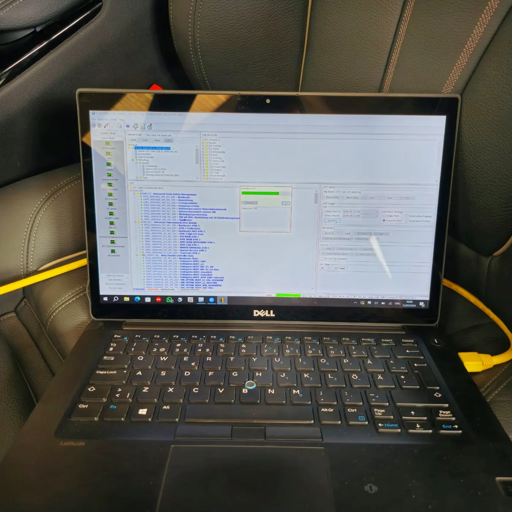

Problemi di Riscaldamento sulla Tua BMW? Metà Calda, Metà Fredda? Ecco Come Abbiamo Risolto!
Aria calda solo da un lato dell’abitacolo: la diagnosi ha rivelato una scatola di riscaldamento guasta. Ecco come l’abbiamo risolto.
Leggi di piùSpecialista indipendente BMW e MINI
Specialista indipendente BMW e MINI
Scegli il meglio, rilascia il meglio: sblocca il potenziale del tuo veicolo con un’officina che conosce a fondo ogni BMW e MINI.
4,8★★★★★27 recensioniI nostri servizi
Dal tagliando alla catena di distribuzione, dalla codifica alla rimappatura.

01Tagliandi registrati nel database BMW, con ricambi originali e sistema CBS.
Scopri di più
02Intervento specialistico sui motori BMW e MINI, in particolare N47 e N57.
Scopri di più 03
03Sostituzione olio e filtro con ZF Lifeguard Fluid 8 per trasmissioni sempre al meglio.
Scopri di più
04Da Vanos e turbina ad alternatori, ABS/DSC e cablaggi: riparazioni garantite.
Scopri di più 05
05Manutenzione e riparazione del ripartitore xDrive per trazione e stabilità impeccabili.
Scopri di più 06
06Sblocca le funzioni nascoste della tua BMW o MINI e aggiorna il software di bordo.
Scopri di più 07
07Diagnosi a livello di concessionaria su tutti i moduli elettronici, a una frazione del prezzo.
Scopri di più
08Più potenza, più coppia e consumi ridotti con una mappa su misura per il tuo veicolo.
Scopri di piùVideo
Interventi reali, ripresi nella nostra officina di San Giuliano Milanese.
Rimappatura per ogni veicolo
Non solo BMW e MINI: rimappiamo auto, moto, camper e veicoli commerciali di tutti i marchi.
Sblocca il vero potenziale della tua auto: migliore efficienza del carburante, potenza aumentata e prestazioni superiori.
Inizia la trasformazioneRivela la potenza nascosta della tua moto: maggiore efficienza, più potenza e prestazioni ottimali.
Sblocca la potenzaPiù potenza in salita e a pieno carico, consumi migliori: vivi l’avventura come mai prima d’ora.
Libera la potenzaMassimizza l’efficienza del tuo veicolo commerciale: più potenza, prestazioni ottimizzate e risparmio di carburante.
Rivela il vero potenzialeDona una rinascita al tuo veicolo
Scopri il salto di qualità che il tuo veicolo può fare con una mappa sviluppata su misura.
Più potenza e più coppia su tutto l’arco di erogazione.
La rimappatura ottimizza l’efficienza del motore, migliorandone potenza e risposta.
Ottimizza l’efficienza del tuo veicolo e risparmia sul carburante.
Una rimappatura eseguita correttamente può aiutare a ridurre le emissioni, rendendo il veicolo più ecologico.
Goditi la tranquillità di un supporto duraturo.
Perché sceglierci
Recensioni
Ho portato la mia Audi A3 da loro per una rimappatura e sono rimasto colpito dal risultato. Il mio veicolo ora ha un’accelerazione più fluida e veloce. Un team fantastico che offre un servizio eccellente. Consigliatissimo!
Sono un appassionato di moto e ho portato la mia Kawasaki Z1000 per una rimappatura. Il miglioramento nelle prestazioni è stato immediato. Ora è molto più divertente da guidare. Grazie mille!
Non avrei mai pensato che la rimappatura avrebbe potuto fare una differenza così grande sul mio furgone Ford Transit. Ora gestisce i carichi pesanti molto meglio e risparmio anche sul carburante. Grandioso lavoro, ragazzi!
Avevo sentito parlare della rimappatura, ma non ero sicuro se fosse la scelta giusta per la mia Fiat 500. Ho deciso di provare e sono contento di averlo fatto. La mia auto è molto più reattiva e più divertente da guidare. Ottimo servizio!
Il mio SUV Mercedes ha sempre avuto bisogno di un po’ più di potenza. Ho deciso di fare una rimappatura e sono rimasta impressionata dai risultati. Ora affronta le salite senza problemi e ha più potenza in autostrada. Un investimento che vale ogni centesimo.
Ero scettico sull’effetto della rimappatura sulla mia Alfa Romeo Giulietta, ma dopo aver provato il servizio sono rimasto estasiato. La differenza nella risposta dell’acceleratore è impressionante. Ottimo lavoro!
Ho portato la mia Porsche 911 per una rimappatura e sono rimasto sorpreso dai risultati. L’accelerazione è più fluida e la velocità massima è aumentata. Sono molto soddisfatto. Grazie mille!
Ho sempre sentito parlare della rimappatura ma non l’avevo mai considerata per la mia Jeep Wrangler. Dopo aver provato, sono rimasta molto soddisfatta dei risultati: è molto più agile e veloce. Servizio fantastico!
Blog

Aria calda solo da un lato dell’abitacolo: la diagnosi ha rivelato una scatola di riscaldamento guasta. Ecco come l’abbiamo risolto.
Leggi di più
Un cliente voleva solo codificare il ripartitore anteriore della sua BMW: la nostra diagnosi completa ha trovato il vero problema.
Leggi di più
Cos’è l’attivazione video in movimento, come funziona e perché affidarsi a professionisti per l’installazione sulla tua auto.
Leggi di piùDove siamo
A pochi minuti da Milano, facilmente raggiungibile dalla tangenziale. Riceviamo su appuntamento.